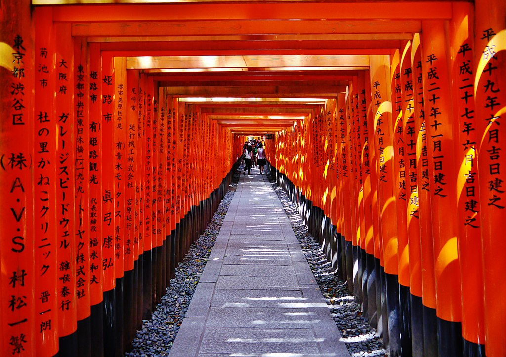
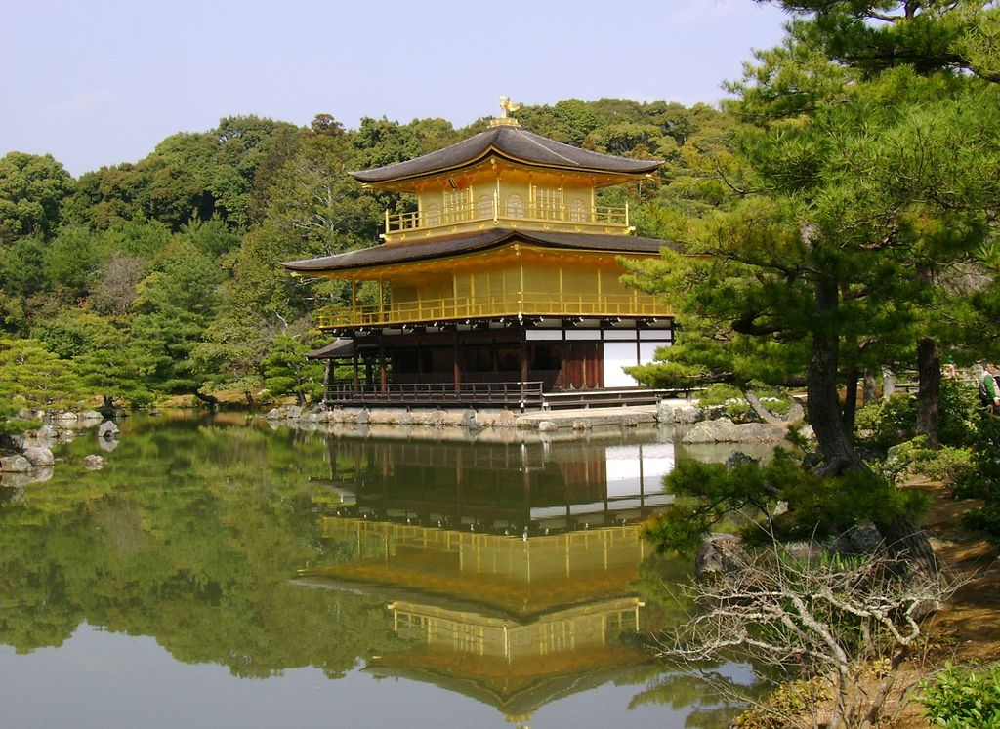
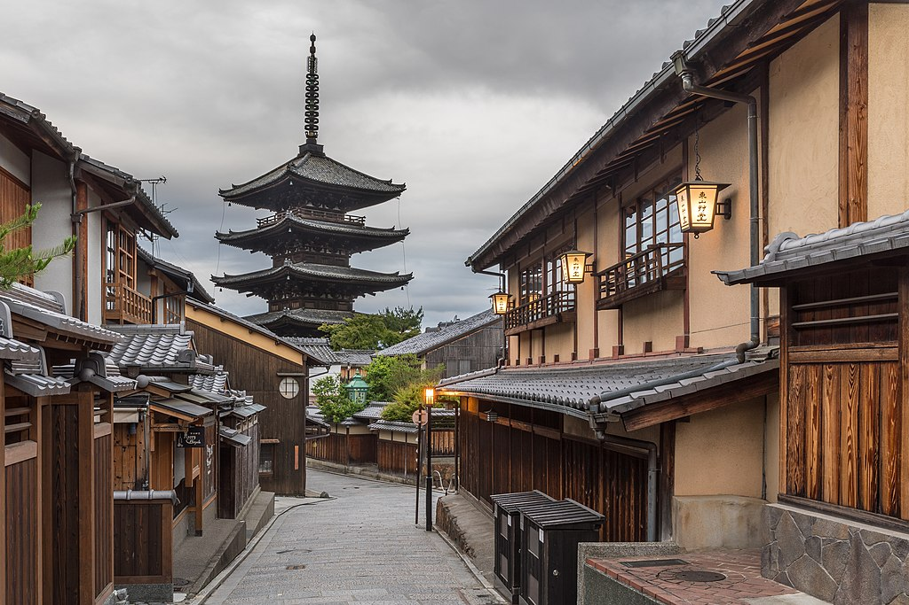

SIGHTSEEING
Kyoto is a city located in the central part of Japan's Honshu Island. It is known for its rich cultural heritage, which dates back to the country's feudal era. Kyoto was the imperial capital of Japan for more than a thousand years, and this has left a lasting mark on the city's architecture, art, and traditions. Visitors can explore numerous temples, shrines, and gardens that offer a glimpse into Japan's ancient past. Kyoto is also famous for its traditional cuisine, such as Kaiseki, which is a multi-course meal that features seasonal ingredients. Today, Kyoto remains an important cultural and economic center in Japan and is a popular destination for both domestic and international travelers.
Fushimi Inari
Fushimi Inari is a Shinto shrine located in Kyoto, Japan, famous for its thousands of vermilion torii gates. Visitors come to the shrine to make offerings, pray for good fortune, and take in the stunning views of the surrounding forest and countryside.
Kinkaku-ji
Kinkaku-ji, also known as the Golden Pavilion, is a Zen Buddhist temple located in Kyoto, Japan. The temple is known for its stunning architecture, with the upper floors covered in gold leaf, and its serene setting on the edge of a pond surrounded by beautiful gardens.
Gion
Gion is a historic district located in Kyoto, Japan, known for its traditional wooden machiya merchant houses and geisha culture. Visitors can stroll along the charming streets, take in the beautiful architecture, and even catch a glimpse of a geiko (geisha) or maiko (apprentice geisha) on their way to a performance or appointment.